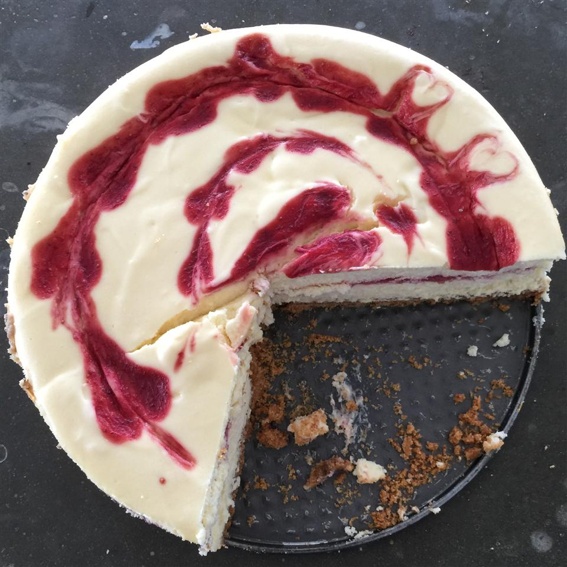

Strawberry Cheesecake

An elegant Strawberry Cheesecake
Ingredients:
- 1 ¼ cups graham cracker crumbs
- ¼ cup white sugar
- 2 teaspoons ground cinnamon
- ⅓ cup butter, melted
- 2 (10 ounce) packages frozen sweetened sliced strawberries, thawed and drained
- 1 tablespoon cornstarch
- 3 (8 ounce) packages cream cheese, softened
- 1 (14 ounce) can sweetened condensed milk
- ¼ cup lemon juice
- ½ teaspoon vanilla extract
- 3 eggs
- 1 tablespoon water (Optional)